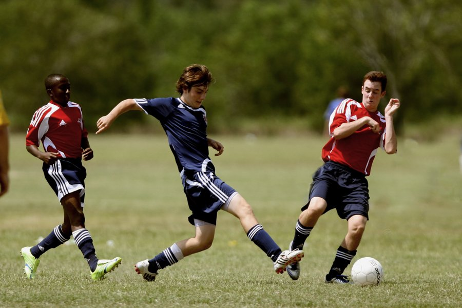

7 Nov 2019
Author : Nathachai
เชื่อว่าเพื่อนๆคงได้เห็นภาพกีฬา ไม่ว่าจะเป็นกีฬาทางบก กีฬาทางน้ำ ผ่านทางโลกออนไลน์ หรือ ตามพาดหัวของหนังสือพิมพ์ต่างๆ ซึ่งแน่นอนว่าเพื่อนๆทุกท่านก็สามารถถ่ายภาพกีฬาได้เช่นกัน แต่ทั้งนี้การถ่ายภาพกีฬา หรือ Sport Action Photography นั้น ล้วนแล้วแต่ต้องมีพื้นฐานในการควบคุมกล้อง รวมถึงเข้าใจถึงสถานการณ์ ณ ตรงหน้าว่า เราจะต้องปรับหรือตั้งค่าการถ่ายภาพกีฬาอย่างไรบ้าง
สำหรับการถ่าย Sport Action Photography นั้น จะแตกต่างจากการถ่ายภาพแบบทั่วๆไปอย่างสิ้นเชิงครับ บางท่านอาจจะนึกภาพเพียงแค่การถ่ายภาพกีฬาทั่วๆไป แต่ในความเป็นจริงแล้ว ภาพกีฬาที่เรามักจะได้ตามหน้าหนังสือพิมพ์นั้น ล้วนแล้วจะมาจากการแข่งขันในสถานที่ปิด หรือ สถานที่ๆเป็นทางการนั่นเองครับ ทำให้การใช้งานเลนส์ทั่วๆไปอย่างเลนส์ Kit นั้น แทบจะไม่ได้ภาพกีฬาเลยก็ได้ครับ ซึ่งภาพ Sport Action Photography นั้น มีความจำเป็นที่จะต้องใช้เลนส์เฉพาะทาง โดยเฉพาะเลนส์ในกลุ่มของ Telephoto , Super Telephoto ซึ่งเลนส์ในกลุ่มนี้จะมีทางยาว Focus ที่ไกลกว่าเลนส์ปกติทั่วไป โดยจะมีทางยาวที่นิยมตั้งแต่ 200 – 600mm. กันเลยทีเดียวครับ ยิ่งเป็นเลนส์ที่มีทางยาว Focus ยาวมากเท่าไร ยิ่งเพิ่มโอกาสในการเก็บภาพ Sport Action Photography ได้มากยิ่งขึ้น ทั้งนี้ใช่ว่าเลนส์ที่มีทางยาว Focus สูงๆจะได้เปรียบเสมอไปนะครับ เพราะ ยิ่งทางยาว Focus มากเท่าไร องศารับยิ่งแคบทำให้มุมภาพที่ได้ก็จะจำกัดเช่นกันครับ รวมถึงหากเป็น Telephoto Zoom จะยิ่งเพิ่มความยืดหยุ่นในการถ่าย Sport Action Photography ได้เป็นอย่างดีครับ
บางครั้งเลนส์ที่เรามีนั้น อาจจะมีทางยาว Focus ที่น้อยเกินไปจนไม่เพียงพอต่อการเก็บภาพกีฬา ทางแก้คือเลือกใช้งาน Teleconverter เพิ่มเติมครับ ซึ่งเจ้าอุปกรณ์ชิ้นนี้มักจะถูกทำออกมาให้ใช้งานร่วมกับเลนส์ Telephoto , Super Telephoto ในบางรุ่น โดยมีคุณสมบัติในการเพิ่มทางยาว Focus มากยิ่งขึ้น ซึ่ง Teleconverter มักจะมีให้เลือกใช้งานทั้งแบบ 1.4x หรือ 2.0x ครับ ทั้งนี้แม้จะได้ระยะที่เพิ่มขึ้น แต่ก็จำเป็นที่ที่จะต้องแลกกับการเสียแสงบางส่วนไปด้วยเช่นกันครับ
Shutter Speed หรือ ความไวชัตเตอร์ นั้น หมายถึง ระยะเวลาที่ชัตเตอร์ของกล้องเปิดออกเพื่อรับแสงเข้ามายังเซนเซอร์ในตัวกล้องขณะถ่ายภาพ คุณจึงควบคุมการถ่ายภาพตัวแบบที่กำลังเคลื่อนไหวได้อย่างเต็มที่ ซึ่งถือเป็นอีกหนึ่งในปัจจัยหลักในการควบคุมปริมาณแสงและลักษณะของภาพถ่าย เมื่อแสงเดินทางผ่านเลนส์เข้ามายังตัวกล้อง ชุดชัตเตอร์จะเป็นประตูเปิด-ปิดเพื่อกั้นแสงที่จะเดินทางต่อไปยังเซนเซอร์รับภาพที่อยู่ด้านหลังต่อไป
การถ่ายภาพกีฬา / การถ่าย Sport ที่ต้องการหยุดนักกีฬาเอาไว้ให้นิ่งสนิทในภาพก็ต้องใช้สปีดชัตเตอร์ที่มีความเร็วสูง เพราะนักกีฬามีการเคลื่อนไหวที่รวดเร็ว หรือการถ่ายภาพรถยนต์ที่กำลังวิ่งให้นิ่งสนิทก็ต้องใช้สปีดชัตเตอร์ความเร็วสูง เพราะรถยนต์เคลื่อนที่ด้วยความเร็ว หากใช้สปีดชัตเตอร์ช้าก็จะไม่สามารถหยุดรถยนต์ในภาพถ่ายให้นิ่งสนิทได้นั่นเอง แต่สำหรับการถ่ายภาพกีฬา หรือ Sport Action Photography นั้น ไม่ได้หมายความว่าเราจะต้องถ่าย Subject หลักของเราให้หยุดนิ่งกับที่เสมอไป แต่เราสามารถประยุกต์เทคนิคอื่นๆมาใช้งานร่วมกับการถ่าย Sport Action Photography ได้เช่นกันครับ อาทิเช่น
เทคนิคการถ่ายภาพ Panning หรือ เทคนิคการถ่ายภาพ Pan Action นั้นเรามักจะเห็นเป็นที่นิยมในการถ่ายภาพ Actions อยู่แล้วครับ เช่น ภาพรถวิ่ง ภาพเด็กถีบจักรยาน ภาพเด็กวิ่ง ถ้าเราอยากให้ภาพนั้นดูว่าเป็นภาพที่มีการเคลื่อนไหวเราก็ใช้เทคนิค Panning หรือ Pan Action นั่นแหละครับ หลักการคือ ใช้ชัตเตอร์ช้าครับ เพื่อใช้เอฟเฟกต์ยืดเบลอของชัตเตอร์ช้า ในเวลาที่เราถ่ายภาพเราก็ Pan ตามวัตถุในแนวระนาบซ้ายขวา สิ่งที่ไม่ได้เคลื่อนไหวเช่นฉากหลัง ตึกรามบ้านช่องก็จะยืดเบลอออกไปส่วนที่เรา Pan ตามก็จะชัดครับ ฟังดูแล้วไม่ยากใช่มั้ยครับ แต่จริง ๆ แล้วการ Panning จะให้ออกมาคุณภาพดีนี่ก็ยากอยู่ครับ อาจจะต้องอาศัยการฝึกฝนครับ ยิ่งสำหรับบางคนที่ผมเคยเจอนี่แยกประสาทการ Pan กับการกดชัตเตอร์ไม่ได้เลย คือพอจะจังหวะ Pan ก็ Pan ปกติครับแต่พอจะกดชัตเตอร์ดันหยุด Pan ภาพที่ได้ฉากหลังเลยไม่ยืดแบบที่เราต้องการ กลายเป็นวัตถุที่จะถ่ายยืดแทน หรือ มองไม่เห็นวัตถุไปเลยเพราะ Pan ไม่ทันก็มี
สำหรับการถ่ายภาพ Motion Blur เราจะเน้นที่ค่า Speed Shutter เป็นหลัก ซึ่งเจ้า Spped Shutter นี้จะมีผลอย่างมากต่อภาพ Motion Blur ซึ่งแนะนำให้เพื่อนๆที่จะใช้เทคนิคดังกล่าว ควรตั้งค่าไว้ที่ Mode M เพื่อที่เราจะสามารถกำหนด Speed Shutter และ ค่ารูรับแสงได้ด้วยตัวเราเอง หรือ จะเป็น Mode S เพื่อที่เราจะควบคุม Speed Shutter เอง โดยลองเริ่มที่สปีดชัตเตอร์ความเร็ว 1 วินาที ก่อนและดูผลที่ได้ว่าเป็นที่พอใจหรือไม่ แล้วลองปรับค่าต่างๆใหม่ดูอีกครั้ง ลองจนกว่าจะพอใจครับ
อย่างที่ได้เกริ่นไปว่าการถ่าย Sport Action Photography นั้นเราสามารถประยุกต์ความสามารถอื่นๆได้เช่นกัน ซึ่งนอกเหนือจากการถ่าย Panning และ Motion Blur แล้ว ยังมีเทคนิค Freeze Motion ด้วยเช่นกันครับ ซึ่งเจ้า Freeze Motion เสมือนเป็นการหยุดการเคลื่อนไหวของ Subject เราให้หยุดนิ่งอยู่กับที่นั่นเองครับ ข้อสำคัญคือต้องใช้ค่า Speed Shutter ที่สูง เพื่อให้ Subject หยุดนิ่งแล้วยังไม่สูญเสียความคมและรายละเอียดด้วยครับ ซึ่งทีมงานแนะนำค่า Speed Shutter ควรตั้งไว้ 1/1000 ขึ้นไปครับ